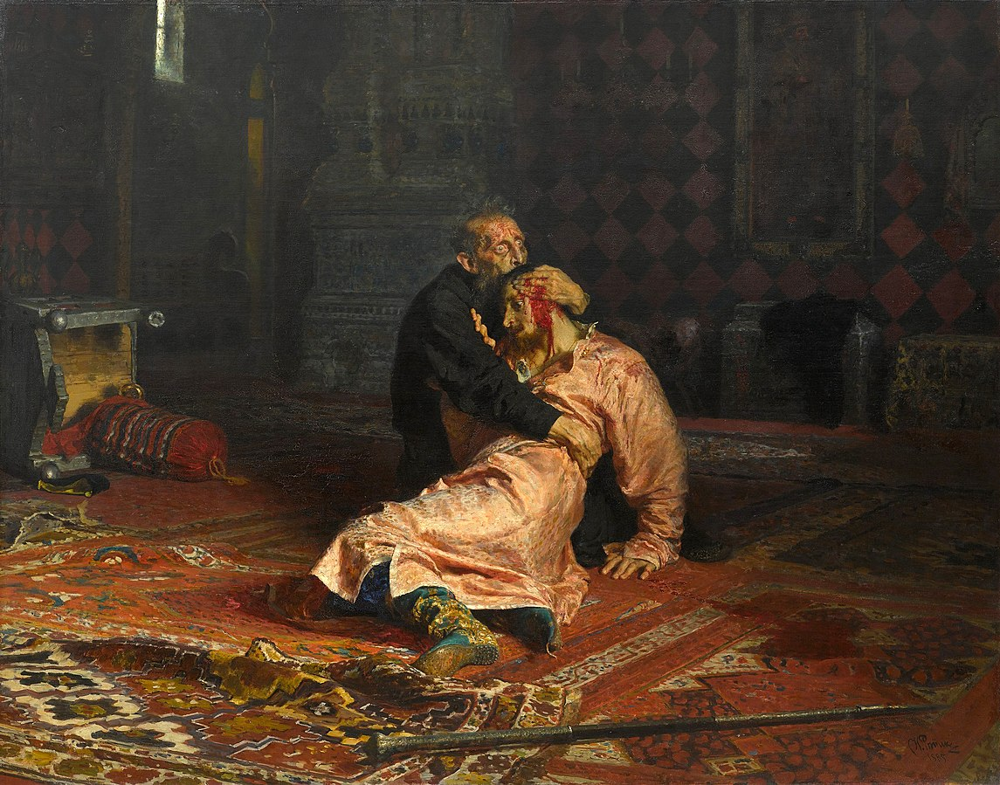
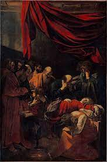
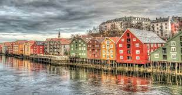
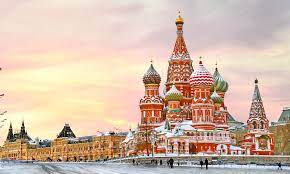

Hello, I'm Léopold. I'm French, I live in the Paris area. Currently I am very curious and have a lot of passion like art, literature or psychologyand I love to travel and learn new things. That's why I would like to live abroad in Eastern Europe or Asia I am a student in business school in Cergy. I'm studying a degree in Business Administration at ESSEC Business School
I was born in Versailles on April 5, 2004. And I lived there for a long time next to the castle
as a child I was full of mischief and I was always annoying my friends, I was very choleric. I started to do judo, tennis but I was never very good in sports. However I was always good in literature, history and math. I went to high school at the Lycée Louis de Brooglie After my baccalaureate I chose to study business and now i'm an essec student
Art has always been a passion of mine, and I find it to be one of the most profound expressions of human creativity. There's something about the way that artists can capture emotion and beauty through their work that speaks to me on a very personal level. Of all the great artists throughout history, two of my favorites are Ilya Repin and Caravaggio. Ilya Repin was a Russian realist painter who had a profound impact on the art world with his depictions of historical and social events. His use of color and light to create a sense of depth and emotion is simply stunning.
Similarly, Caravaggio, an Italian painter from the 16th century, is known for his dramatic use of light and shadow in his paintings. His ability to capture the human form in such a realistic way is truly remarkable, and his work has had a lasting influence on the art world. For me, what makes these two artists so special is their ability to evoke such powerful emotions through their work. Whether it's the raw emotion of Repin's "Barge Haulers on the Volga" or the haunting beauty of Caravaggio's "The Calling of Saint Matthew," their paintings have the ability to transport me to another world and make me feel something deep within my soul. 
Here are some links to my favorite museums : le Louvre
rijksmuseum museo del pradoI love to travel, and my recent trips to Norway, Russia, and Tunisia have been amazing experiences. In Norway, I was captivated by the stunning natural beauty of the fjords, mountains, and glaciers. I enjoyed hiking and skiing in the great outdoors, as well as taking boat rides to see waterfalls and other natural wonders up close. 
Russia was a fascinating destination with its rich history and unique architecture, particularly in Moscow and St. Petersburg. I visited iconic landmarks like the Red Square and the Kremlin, and also tried traditional Russian cuisine. I also went to Tunisia with
Legmi raceThe objective of this humanitarian trip to Tunisia was to provide concrete help to the local population while getting to know and appreciate the culture of this North African country.
I have always been fascinated by Asian culture and the idea of living and studying in Japan or Korea is incredibly exciting to me. I am drawn to the rich history, traditions, and unique way of life in these countries, and I believe studying abroad would be an amazing opportunity to immerse myself in these cultures. In addition to my academic pursuits, I am also interested in working abroad after graduation. I believe that gaining professional experience in a foreign country would be a valuable opportunity to broaden my skills and perspectives while experiencing different work environments and cultures. Aside from academic and professional pursuits, I am also eager to continue exploring and discovering new things. I am always eager to try new foods, explore new places, and meet new people. Making friends in a foreign country is an essential part of the experience for me, as it allows me to learn from others and broaden my horizons. Overall, my desire to study in Asia, work abroad, and make new friends while continuing to discover new things is a reflection of my passion for learning and my excitement about the world around me.